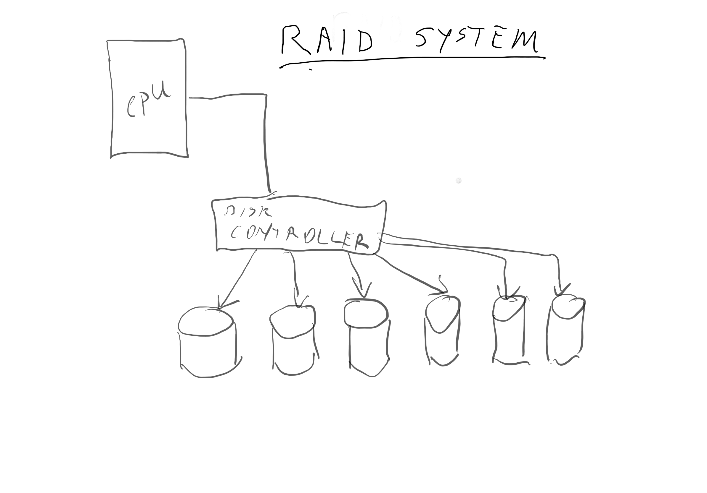
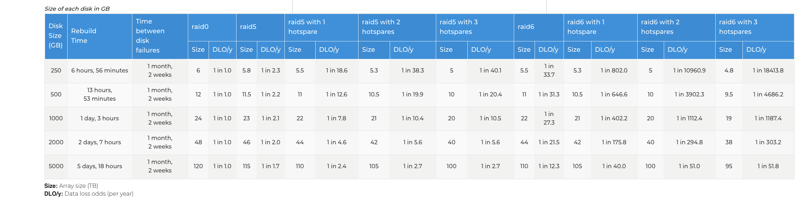

Youtube Preferred:
Lecture 19 - quick zoom overview
Lecture 19 - RAID storage part 1
Lecture 19 - RAID storage part 2 - disk reliability
Lecture 19 - RAID storage part 3 - data rot
Lecture 19 - RAID storage part 4 - better systems than RAID
Lecture 19 - Part 5 - Why do processors pre-fetch instructions
Lecture 19 - quick zoom overview
Lecture 19 - part 1
Lecture 19 - part 2
Lecture 19 - part 3
Lecture 19 - part 4
Lecture 19 - part 5
Most important - take good care of yourself! Remember to get outside and go for a walk!
Our first “zoom” based office hours worked! It worked really well!
RAID arrays have just become the “thing” - manager’s and business types just plan on it as a way of protecting data. People just think that this is the way to make your data safe - and the spend on it.
What RAID is not!
Why RAID? I want to protect my data.
First - what is the history of RAID. RAID started out on disks that were 1MB to 5MB - and they were much cheaper than corresponding high reliability 25 or 50MB disks. A 5MB SCSI interface disk would cost $1750 - and you could build a RAID array with 10 of them. A 35MB disk from IBM or DED would cost $250,000.00 and give you the same reliability - but with much lower performance.
What do they look like:
RAID has a bunch of “levels” which are different implementations of parity and data recovery or duplication of drives.
RAID 0 consists of striping, but no mirroring or parity. Striping means that you have your data across multiple drives with a chunk on each drive. This can boost performance. Also it means that if any one of the drives fails you loose the entire system.
RAID 1 consists of data mirroring. No parity or striping is used. Data is written identically to two or more drives, thereby producing a “mirrored set” of drives. Read requests can be provided by any of the drives that have that data. This has a definite performance boost. Writes are slower because you have to write to multiple drives.
RAID 2 consists of bit-level striping with dedicated Hamming-code parity. I don’t think this is used any more. It requires drive level speed synchronization. Most modern hard drives to not have an interface that allows this.
RAID 3 consists of byte-level striping with dedicated parity. Like RAID 2 - this is out of use.
RAID 4 consists of block-level striping with dedicated parity. NetApp used to use this but has replaced it with its own RAID-DP system that is proprietary with double redundancy blocks on 2 drives. NetApp’s system has better small block throughput.
RAID 5 is built out of block-level striping with distributed parity. Parity information is distributed among the drives in the set. This means that it can recover from a single drive failure. You have to have a minimum of 3 drives but in practice 5 drives with 1 spear is a common confutation set. This has been the most common RAID configuration.
RAID 5 implementations are susceptible to system failures because of increasing disk size and rebuild times. If you have a 2nd drive fail (or you have data rot on a second drive) during a rebuild then you loose the entire set.
RAID 6 consists of block-level striping with double distributed parity.
RAID 10 Uses a disk duplication scheme with some parity checks. It avoids the problems of 5 and 6 but requires more than 2x the number of disks.
See https://www.lacie.com/manuals/lrm/raid/
Real world usage and failure stats: https://www.backblaze.com/blog/hard-drive-stats-for-2019/
Disks have gotten bigger and bigger - and people still think that raid worked the way it has always worked. Also peoples exception of acceptable down time has gotten less and less. They are really put out when a system is offline for 5 minutes, let alone days.

Let’s look at what is wrong with this kind of a system. What happens if the controller fails. This is a single point of failure. What happens if 1 of the 6 disks fails and you have to use the spare to do a recovery. The longer it takes to write a disk the longer the recovery takes.
Let’s talk about twin engine air plainest v.s. single engine airplanes. Most people look at a twin and say that there are 2 engines so if 1 fails then you still have one left. Reality works more like this. You have twice as many engines to fail so you have doubled your likelihood of an engine failure. Twins are actually more dangerous than single engine airplanes.
In a raid system with 5 in use and 1 spare you have 6 times as many chances of failure! Also you have a much more complicated disk controller - one that can also fail.
Data will degrade over time.
Single point of failure happens. A single RAID controller with a set of disks - then the controller is the single point of failure.
RAID Recovery Times:
DLO/y = Data Loss Odds per Year

To Address some of this we have RAID6 - this helps but it is definitely not a solution.
BTRFS: a better file system.
Take a few minutes to read https://en.wikipedia.org/wiki/Btrfs
Take a quick “copy” of an entire file system.
Deal with data rot by having checksums of all files and periodic re-read of data to validate.
Use disks in a pool with duplicated data written to multiple disks.
16 Exabyte file system size. This is 16 * 2 ** 60 - that is a bunch.
F1 is a port of the MySQL database to run on a distributed block share called BigTable.
Most likely you are using this already. Gmail, google docs and lots of other products outside of google use this.
https://storage.googleapis.com/pub-tools-public-publication-data/pdf/41344.pdf